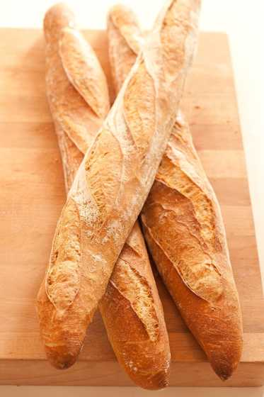
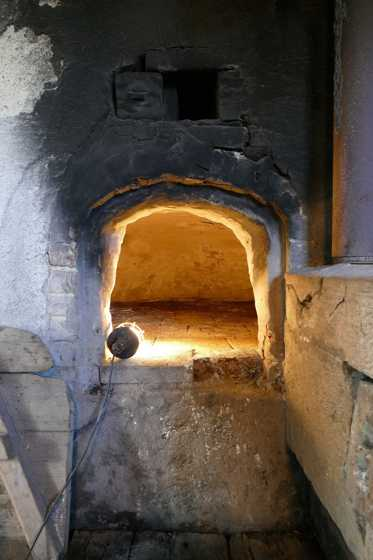
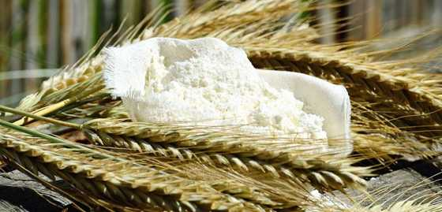

お店の由来・想い
山陽電鉄の別府駅の北側すぐ、新幹線の高架沿いの側道にあるパン屋さんです。オレンジ色のパンダのイラストが入った看板が目印として紹介されています(外部記事による)。
地元で親しまれ、ソフト系からハード系まで、毎日のパンが揃うと伝えられています。土曜日限定の揚げたてのパンも話題です。
店名の意味や創業の経緯は確認できていないため、記載していません。このページのコンセプト「駅のそばで、毎日の朝に焼きたてを」は、場所と営業の様子から考えた制作側のイメージです。

メニュー
紹介記事などで、次のようなパンが取り上げられています(掲載内容は変わる場合があります)。
価格・最新のラインナップ: 準備中


口コミ(イメージ例)
以下は制作側が作成した創作のイメージ例で、実在のお客様の声ではありません。
イメージ例
朝の7時台に寄ると、棚にいろいろなパンが並んでいて選ぶのが楽しい、という雰囲気を想像した例です。
イメージ例
駅の近くなので、通勤や通学の途中に立ち寄る場面を想像した例です。
イメージ例
土曜日に揚げたてのパンを目当てに訪れる、というイメージの例です。
パンのもと
粉と火から生まれるパン。写真はイメージです。




アクセス
| 住所 | 〒675-0122 兵庫県加古川市別府町別府1055-3 |
|---|---|
| 電話 | 準備中 |
| 営業時間 | 準備中 |
| 定休日 | 準備中 |
| @bekaripanda |